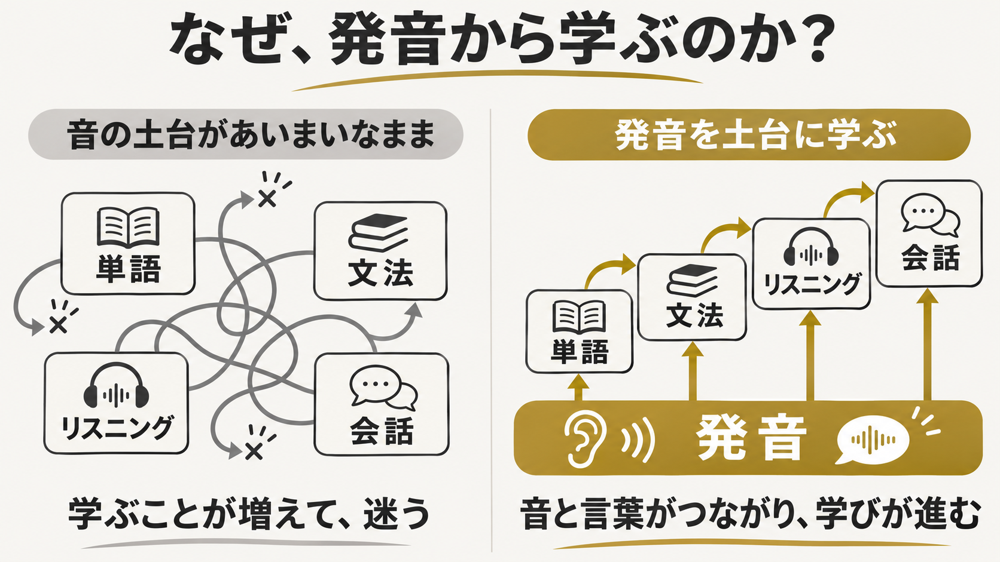
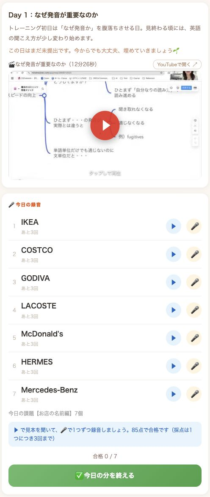
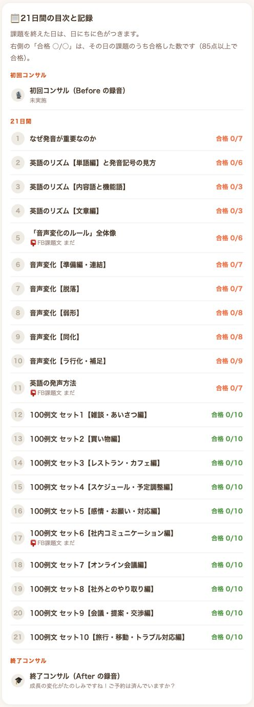

リズム
強く言うところ。
弱く速く言うところ。
Ken’sgonnameether
単語を同じ強さで並べず、文全体の強弱をつかみます。
仕事で英語を使う40代・50代へ
知っている言葉を、会議で聞き逃すあなたへ。
リズム・音声変化・発声。3つのポイントを学び、あなたの音のズレを、坪田まゆみと確かめる。まずは21日間、必要な練習に集中しませんか。
魔法の10ミニッツ発音メソッド
毎日の学習は平均15〜20分。
「10ミニッツ」はメソッド名で、総学習時間ではありません。
大手企業の研修から、英語の先生の指導まで。
その経験を、あなた個人の練習へ。
会議で使う英語を、音から見直す。
英文資料は読める。基本的な会話もできる。それでも、会議では知っている言葉を聞き逃す。そんな学習経験のある方に向けたプログラムです。
シャドーイング、音読、オンライン英会話。取り組んできたのに、会議では自信を持って返せない。その場で聞き返せず、あとから議事録や同僚を頼る。そんな経験はありませんか。
努力をさらに増やす前に、一度確かめたいのが「頭の中で思っている音」と「実際に話される音」の違いです。知っている言葉が聞き取れない場面では、このズレが手がかりになることがあります。
まず、つまずく場所を分ける
セミナーで練習した英文を、思い出してみてください。文字は同じでも、実際の会話では一語ずつ、同じ強さで発音されるとは限りません。
Ken is going to meet her at the station.――一語ずつの音を探していると、短くなったり、つながったりする部分を聞き逃すことがあります。
リズムと音声変化を知ると、「なぜその音になるか」を確かめる手がかりができます。何度も聞くだけで終わらず、強く言うところ、弱く速く言うところを、自分でも声に出して確かめます。
Ken is going to meet her
at the station.
Ken’s gonna meet her at the station.
会話での一例です。話し手や文脈で音は変わります。音声そのものはセミナーのワークでご確認ください。
発音指導を体験した方の声
これまで私の発音指導を体験した方から、こんな感想をいただいています。
Youtubeなどで練習した事はありますが、段階を踏んで練習すると、こんなにも違って言える様になるのかと嬉しかったです。
英語が聞き取れると、こんなにもワクワク楽しい気持ちになれる。もっと学びたい！
音が聞こえないと思って、自分の耳は人より劣っているかもとオーストラリアで生活する中で常々思っていましたが、音に対する知識と認識が繋がっていないと言うことが分かりました。
そこを改善していけば、相手の言ってることが分かるようになるのかなと思いました。
発音の違いを感じる。聞き取れることを楽しむ。次に取り組むことが見えてくる。欲しかったのは、勉強時間を増やすことだけでなく、こうした手応えではないでしょうか。
過去の発音指導で寄せられた感想です。今回の21日間コースの成果を示すものではありません。変化には個人差があります。
発音は、仕上げではなく土台。
覚えた単語や文法を、捨てる必要はありません。その知識を、耳に届く音と、自分が出す声につなげていきます。
発音は、きれいに話すための仕上げだけではありません。聞くときに何に注目するか、英文をどう声に出すか。その両方に関わる練習です。
単語も文法も会話練習も大切です。そのうえで音に課題があるなら、まずそこを確かめる。これまでの努力を、その先の英語に生かすために。

単語・文法・聞き取り・会話
何を足せばいいか、迷う音と言葉を、結びつけて練習する
発音だけで英語が完成するわけではありません。単語・文法・会話の練習も結びつけて育てます。
学ぶポイントは、3つ。
目指すのは、聞いた直後だけ言える状態から一歩進み、初めて見る英文でも、どう発音するかを考えられること。
最初に確かめるのは「リズム」です。どの語を強く、どの語を弱く言うのか。音声変化も、そのリズムと結びつけて練習します。
3つを別々の知識として覚えるだけで終わらせず、一つの英文で使います。見本を聞く。自分で声に出す。録音して比べる。違いがあるところを、もう一度練習する。この流れを繰り返します。
強く言うところ。
弱く速く言うところ。
単語を同じ強さで並べず、文全体の強弱をつかみます。
くっつく。消える。
音が変わる。
そのリズムに言葉を入れるとき、どんな変化が起きるかを確かめます。
声を細かく切らず、
ひと息でつなぐ。
見本を聞き、自分でも声に出して、声のつながりを練習します。
「なぜその音になるか」を知り、自分の声で確かめる。
「聞く」と「話す」は、切り離された働きではありません。音声を聞くときにも発声に関わる脳の領域の一部が活動した研究や、発音のしかたを学んだ後に、一部の音の聞き分けが改善した研究があります。［1］［2］
あなたの音に、私が向き合います。
あなたが提出した音声を、坪田まゆみが直接聞きます。できているところと、優先して見直すところを一緒に確かめる、全3回のフィードバックです。
自分では見本に近づけているつもりでも、違いに気づきにくいことがあります。だから、日々の練習の途中に、人に聞いてもらう機会を用意しました。
提出日は5・11・17日目。リズム・音声変化・発声の観点から見直す点を知り、そのあとの練習に戻ります。所定の音声課題3回へのフィードバックで、毎日の録音すべてを添削するものではありません。
目指すのは、ネイティブそっくりではなく、相手に伝わりやすい英語。発音指導の研究でも、ネイティブらしさより、相手にとっての理解しやすさで大きな改善が報告されています。［3］
学びを、仕事と日常へ。
ここからは、発音に加えて会話や文章を作る練習にも取り組み、私の指導を継続して受けた方の体験です。
Zさん／海外で仕事をする中で
オンライン英会話やシャドーイングなど、いろいろ試しても手応えを感じられず、英語での関係づくりにも不安がありました。
その後、発音やリズムを意識する中で、以前は一度で伝わらなかった相手にも、言葉が自然に伝わる変化を実感。仕事でも、相手の意図を理解し、自分の意見を述べられるようになったと振り返っています。
Y.Tさん／海外の同僚とのやり取りで
留学経験も資格もありながら、英語で話すことに不安を抱えていたY.Tさん。練習を重ねる中で、仕事の相談から雑談まで、約40分英語で話す場面がありました。
私こんなに喋れたっけ
ご本人もそう驚き、ジョークで相手が笑ってくれたことも、嬉しい出来事として話してくださいました。
Megumiさん／学習への納得感が変わる
以前の英語学習では、なぜその課題が必要か分からず、続けても変わらないのではと感じていました。
私との学習では、できていないところと練習のポイントを一緒に確認。疑問を曖昧にせず学べるようになったと話してくださいました。覚えた表現を友人との会話で使い、相手が喜んでくれた手応えも生まれています。
体験談はご本人の報告をもとに要約しています。継続的な指導の中での変化であり、今回の21日間だけの成果ではありません。成果には個人差があります。
会議でうなずくだけでなく、自分の考えを返す。用件が終わったあと、同僚と少し雑談する。英語を学ぶ理由は、きっと、そうした時間の先にあるはずです。
「分かった」の、その先へ。
AI英会話も、動画も、練習の役に立ちます。それでも「自分の何を変えるか」が分からないときは、その確認に人の目と耳を使ってください。
会話をすることと、特定の音を練習し直すことには、それぞれ役割があります。スポーツでも、練習試合のほかに、フォームや苦手な動きを確かめる時間があります。
英語も同じです。今は会話量を増やすのか、音の仕組みを見直すのか。あなたの現在地と、英語を使いたい場面を聞きながら、練習の優先順位を考えます。
情報を買い足す、その前に。
比べていただきたいのは、動画の本数やレッスンの回数だけではありません。「何を直すか」が分からないまま使う時間と、その課題を確かめて取り組む時間です。
例えば、1日20分の練習を30日続けると、合計10時間。無料の教材を使っていても、あなたの時間を使うことに変わりはありません。
その時間を、同じつまずきを繰り返す練習に使うのか。一度、自分の音を聞いてもらい、直す点を確かめてから取り組むのか。これからも英語を使っていくなら、ここを見直す価値があると考えています。
今回の21日間は、教材を増やすためではなく、あなたが次に何を練習するかを具体的にするための投資です。
第二言語の教室で行われた15件の研究・827人を対象とする分析でも、誤りに対する口頭フィードバックが学習を助けることが報告されています。［4］知識を増やすだけでなく、自分の実践に修正を受ける。その機会を、練習の中に組み込みます。
1日20分を30日続けた場合の計算例です。節約できる時間や成果を示す数値ではありません。
学ぶことを増やすより、実践を深める。
英語のすべてを一度に学ぼうとせず、リズム・音声変化・発声に集中する。知る・直す・使うを一巡するための、4日＋7日＋10日です。
最初の4日間はリズム。次の7日間は音声変化と発声。最後の10日間は、日常から仕事までの100例文で使います。取り組む順番と終わりが見えるから、今日の練習に集中できます。
途中には3回の音声フィードバック、前後には個別コーチング。学んだことを一度で終わらせず、確かめ、直し、また練習する機会を組み込みました。
21日は、誰でも習慣が完成する特別な日数ではありません。まず3週間、発音に取り組み、その先の学習へつなぐための区切りです。
1〜4日目
4日単語から文章へ。
強く言うところをつかむ。
5〜11日目
7日つながる・消える音。
声の出し方を練習する。
12〜21日目
10日日常から仕事の場面へ。
自分で音を再現する。
知識を、自分の音に変える練習へ。
知る・声に出す・比べる・直す。この循環を、毎日の練習に組み込みます。
動画の説明を聞いて納得できても、自分の声でできるかどうかは別のこと。見本の音声に合わせ、実際に声を出し、録音して確かめます。
気づいた違いと、坪田からのフィードバックを次の練習へ。新しい学習法を次々に増やすことを一度休んで、自分の音に向き合う21日間にしてください。
21日間のプログラム
アプリの解説動画と見本音声、録音練習を順に進めます。1日平均15〜20分を目安に、リズムから場面別の例文へ。
解説動画は全23本・合計200分32秒、練習課題は延べ171個。後半には日常から仕事まで、場面別100例文を用意しています。
例えばオンライン会議では、“Can you hear me okay?” “Let me share my screen.”。表現を覚えるだけでなく、どういう音とリズムで言うかまで練習します。
動画時間はアプリの表示に基づきます。練習・個別指導等は含みません。課題数は重複を含む出題数で、フィードバック用の音声提出3回は別に用意されています。
DAY 01 — 4
身近な単語から、文章の強弱へ。
DAY 05 — 11
つながる・消える・弱くなる音を、一つずつ。
DAY 12 — 21
日常・仕事・旅行の表現を、1日10例文ずつ。
アプリを開いて、今日の練習へ。
動画・見本音声・練習課題・進み具合は、すべてアプリで確認できます。解説を見るところから録音練習、音声課題の提出まで、アプリで進めていきます。

平均の目安は、1日15〜20分。日によって動画の長さや課題数は違い、繰り返し練習する方はもう少し時間がかかります。
「10ミニッツ」はメソッド名であり、毎日の学習すべてが10分で終わるわけではありません。声を出せる時間を、生活の中に確保してください。

教材と、私による個別指導
開始前60分、終了後60分の個別コーチングと、途中の音声フィードバック3回。教材を渡して、一人にするプログラムではありません。
開始前は、今の発音と、仕事や学習で困っていることを確認。21日間、どこに注意して取り組むかを具体的にします。
学習中は5・11・17日目の音声課題にフィードバック。終了後は同じ英文の音読などで変化を確かめ、できるようになったこと、残る課題、次に優先する練習を整理します。
1日1通の応援LINEもお届けします。学習の質問は基本的に課題フィードバック内で、操作方法などの不明点はLINEで受け付けます。
診断付きコーチング
今の音と目標を確かめ、
練習の方向を決める。
5・11・17日目の音声提出
できている点と見直す点を、
次の練習へ生かす。
振り返りコーチング
変化と残る課題を確かめ、
今後の練習を考える。
すべて、坪田まゆみが直接担当します。

あらためまして、坪田です。
英語のパーソナルトレーナー
コーチ・コンサルタント
魔法の10ミニッツ発音メソッド開発者
学ぶ人にも、教える人にも向き合ってきた。
その経験を、あなたの「使える英語」へ。
これまで25年以上、のべ4,000人の英語学習を指導してきました。米国で4年間学び、現地のITベンダー・旅行会社で1年間働いた経験があります。
GEOS・ベルリッツでの英会話指導、English Company・STRAILでの英語コーチングに加え、JT・参天製薬・シャープなど、大手企業での語学研修を担当。同志社大学・京都女子大学などでの指導にも携わってきました。
また、英語スクールでは英語の先生を指導するトレーナーも務めました。学ぶ方がどこでつまずくのか。そして、教える側がどこで悩み、どう伝えれば理解や実践につながるのか。その両方に向き合ってきました。
だから、できないときに「もっと練習しましょう」だけで終わらせたくありません。説明を変えるのか、練習を小さく分けるのか、別の課題を先にするのか。第二言語習得研究も踏まえ、今のあなたに何が必要で、何を増やさなくていいのかを具体的にしていきます。
指導してきたのは、ビジネス英語から日常英会話まで。会議で自分の意見を伝えることも、海外の同僚と雑談することも、旅行先でやり取りすることも。発音の見栄えだけでなく、あなたが使いたい場面につながる、実践的な英語力を育てることを大切にしています。
目指すのは、指導を受けている間だけ頑張れる状態ではありません。自分の課題が分かり、必要な学習を選び、修正しながら学び続けられること。その先まで見据えてサポートします。
このプログラムの個別コーチングと音声フィードバックは、私が直接担当します。
中学1年の夏、アメリカで『girl』という単語を耳から覚えたとき、後で見たカタカナの『ガール』との音の違いに驚きました。文字で知っている英語と耳に届く英語のずれは、私自身が経験してきたことです。
21日間で、その先の学びへ。
「また別の教材を探そう」から、「自分は次にここを練習しよう」へ。聞き取りや会話の練習を進めるための準備を整えます。
21日間で、英語の勉強すべてが終わるわけではありません。発音が変わったところと、まだ練習が必要なところ。その両方が見えるから、次に力をかける場所を考えられます。
会議で一度聞き返してみる。自分の考えを伝えてみる。用件のあとに少し雑談する。そんな時間に近づくために、まず自分の音から、一緒に確かめていきましょう。
一度に詰め込むより、間隔を空けて練習する。第二言語学習の研究でも、分散して取り組む練習の効果が報告されています。［5］今回も、一度見て終わりにせず、学んだ音を翌日以降の例文や繰り返しの練習で確かめていきましょう。
オンラインセミナー視聴中のご案内
比べていただきたいのは、動画1本あたりの値段や、レッスン何回分という数字だけではありません。
どこが違うか分からないまま練習するか。
一度、私と確かめてから進むか。
最初に現在地を確認し、21日間、音の土台に集中する。途中で3回、あなたの声を私が聞き、最後にその先の学習を考える。「自分は、どの音をどう練習するか」を具体的にしていくための投資です。
魔法の10ミニッツ発音メソッド
21日間チャレンジコース
39,800円（税込）
一括払いのみ／分割なし
この価格はオンラインセミナー終了後60分までのお申し込みに適用されます。その後の講座価格は49,800円（税込）です。
アプリ内の教材の閲覧は、学習開始日から30日間。毎日の学習は平均15〜20分が目安です。
受講条件を確認する英語を学ぶ価値は、仕事や収入だけでは測れません。海外の同僚と、用件の先の話をする。旅先で、もう一つ質問してみる。そうした経験の選択肢を広げることにも価値があると、私は考えています。
10年後、20年後にも、英語を使って楽しみたいことはありませんか。ここでつくる土台を、その後の学習と会話で育てていく。今の苦手を見直すだけでなく、その先の「やってみたい」への一歩にしてください。
一人ひとりの声を聞くために。
私が提出音声を直接聞き、個別セッションも担当します。教材を渡して終わりにせず、今の課題と練習の順番を一緒に確かめます。
受講開始までの流れ
案内に沿って診断付きコーチングの日程を調整します。
初回セッションの日程を調整し、準備することを確認します。
私と1時間、発音と目標を一緒に確認しましょう。
動画・練習と、所定の3回の音声提出に取り組みます。
日程を調整し、今後の学習につながるポイントを確認します。
受講前に、確かめたいこと。
このコースは、あらゆる会話を21日間で完成させるものではありません。聞き取れない音や伝わりにくい発音を見直し、その先の学習を進める土台づくりを目指します。語彙・文法・会話の練習も引き続き必要です。
真似することも練習の一部ですが、「似せたつもり」で終わらず、どこに違いがあるかを確かめます。提出した音声への私からのフィードバックをもとに、練習し直せることを大切にしています。
アプリは学習開始日から30日間、閲覧できます。購入日から30日間ではありません。学習は平均15〜20分が目安ですが、日ごとの内容や繰り返しの量で変わります。無期限の教材ではないため、この期間に取り組む時間をご用意ください。
毎日の録音は見本音声と比べて練習します。私が直接確認する音声課題は所定の全3回です。学習の質問は基本的に課題フィードバック内、操作方法などの不明点はLINEで受け付けます。
講座価格は39,800円（税込）の一括払いです。お客様都合のキャンセル・返金はお受けしない方針です。返金保証はありません。法令上認められる権利を妨げるものではありません。
最後に、あなたへお伝えしたいこと。
英語って楽しいし、会話ができると世界が想像以上に広がるんですよ。
英語が少しできるようになるだけで、いろいろな人やものとのつながりが増える。その楽しさを、あなたにも知ってほしい。それが、私がこのメソッドをお伝えしている理由です。
あなたが英語を学び始めたとき、その先には、何をしたいという思いがありましたか？
仕事で、自分の考えを伝えたかった。海外で暮らすことに憧れていた。旅先で、その土地の人と話してみたかった。
きっと、単語帳を何冊も終わらせることや、問題集で正解することだけが目的ではなかったはずです。
英語を学ぶことの、その先にあるもの。私は、そこに向かって進んでほしいんです。
ここまで読んでくださったあなたは、これまでにも、たくさん努力してきたかもしれません。それでも聞き取れない、言葉が出てこない。そんな経験を重ねてきたのかもしれません。
ここで、一つお伝えしたいことがあります。
英語学習に近道はありません。でも遠回りはいくらでもあるんです。
ただ時間をかけるだけでなく、今の自分には何が必要なのかを知り、そこに合った練習をしていく。そのために、一度、自分の音を確かめてみませんか。
今回の21日間で取り組むのは、英語のすべてではありません。聞き取りや会話を支える、発音の土台を整えることです。
見本を聞いて、声に出して、録音する。提出された音声は、私が聞き、見直すポイントをお伝えします。一緒に確かめながら、練習を進めていきましょう。
「良いことを知った」で終わらせず、あなた自身の声で、実際に取り組んでみる。その一歩を、ここから始めていただきたいんです。
英語の勉強を続けるためだけではなく、英語を使って、やりたかったことに近づくために。
あなたの英語の先にある「夢」を、憧れのままにしないでほしい。そのための土台づくりを、私にお手伝いさせてください。
魔法の10ミニッツ発音メソッド 21日間チャレンジコースで、あなたと一緒に取り組めることを楽しみにしています。
坪田まゆみ
21日間で、その先の英語へ。
この価格はオンラインセミナー終了後60分までのお申し込みに適用されます。その後の講座価格は49,800円（税込）です。
魔法の10ミニッツ発音メソッド 21日間チャレンジコース。講座価格 39,800円（税込・一括）。
学習時間は平均1日15〜20分。アプリの閲覧期間は学習開始日から30日間です。個別コーチング2回、所定の音声フィードバック3回を含みます。
お客様都合のキャンセル・返金はお受けしていません。法令上認められる権利を妨げるものではありません。
21日間チャレンジコースに申し込むカリキュラムをもう一度確認する ↑以下は一般的な研究の紹介であり、本コース自体の効果を実証するものではありません。
Nature Neuroscience, 7, 701–702. 10人を対象とした脳画像研究で、音声知覚と発声時の運動領域の一部に活動の重なりが見られました。「発音できない音は絶対に聞けない」「発音練習だけで理解できる」と証明したものではありません。
Journal of Academic Language and Learning, 9(1), A1–A17. アラビア語母語の大学生を対象とした、特定の音の識別実験。発音指導後に一部の音で改善が報告されましたが、改善が確認されなかった音もあります。日本人の会話全般を検証した研究ではありません。
TESOL Quarterly, 55(3), 866–900. 発音指導のメタ分析では、ネイティブらしさより理解しやすさで大きな改善が報告され、とくに韻律を扱う指導でその傾向が明瞭でした。相手が学習者の発話を理解しやすいかについての研究であり、学習者自身のリスニング力の改善率ではありません。
Studies in Second Language Acquisition, 32(2), 265–302. 15件・827人の教室研究を統合し、口頭の修正フィードバックの学習効果を報告しています。本コース固有の効果、3回という回数の最適性、返答が早いほど常に優れることを示すものではありません。
Language Learning, 72(1), 269–319. 48実験・計3,411人のメタ分析で、間隔を空けた練習に中〜大程度の効果が報告されています。効果は学習内容や条件で異なり、「21日が最適」「21日で必ず習慣になる」と示した研究ではありません。